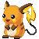

-
BUBASALRO #001

- GRAMA
- VENENO
Há uma smeente de planta em suas costas desde o dia em que esse pokemon nasceu.
A semente cresce lentamente desde então. -
VENASAUR #002

- GRAMA
- VENENO
Venasaur é um Pokémon quadrúpede com pele verde acidentada, e azulada.
Ele tem olhos pequenos e circulares vermelhos, dois dentes pontiagudos em sua mandíbula superior, e quatro dentes pontiagudos em sua mandíbula inferior. Tem três dedos com garras em cada pé.
Possui um grande coqueiro em suas costas. -
CHARMANDER #003

- FOGO
A maioria da cor do seu corpo é laranja, enquanto o seu ventre baixo é de cor amarelo-claro.
Charmander, como suas evoluções, tem uma chama na ponta de sua cauda que arde constantemente.
A força dos seus ataques de fogo pode ser determinado pelo tamanho de chama na sua cauda. -
GENGAR #004
- FANTASMA
- VENENO
A cor de Gengar é roxa. Tem orelhas triangulares, tem olhos pretos e seu globo ocular é vermelho e geralmente é sempre visto com um sorriso.
Tem duas mãos com três dedos em cada e também tem três dedos em cada pé e possui uma cauda. -
PIKACHU #005

- ELETRICO
Toda vez que Pikachu dá de cara com algo novo, ele o acerta com uma descarga elétrica.
Se você se deparar com um fruto torrado, é uma evidência de que esse
Pokémon errou na intensidade de energia de sua descarga elétrica. -
CINDAQUIL #006

- FOGO
Embora chamado de fogo mouse Pokémon, Cyndaquil parece ser um composto de recursos da equidna, visto as chamas em erupção desde a sua volta, e a megera, a forma geral do seu corpo.
Seus olhos muitas vezes são fechados, como ainda é jovem. Ele tem quatro pontos de cor vermelha em suas costas do que suas chamas irrompem.
Ela não tem garras em suas patas dianteiras, mas tem uma única garra em cada pata traseira. -
JIGLYPUFF #007

- FADA
As cordas vocais de Jigglypuff ajustam livremente a frequência de sua voz.
Este Pokémon usa sua habilidade de cantar precisamente em determinadas frequências para deixar seus adversários tontos,
as vezes até em sono profundo. -
SNORLAX #008

- NORMAL
Um dia típico de Snorlax consiste em nada mais do que comer e dormir.
É um Pokémon tão dócil que há crianças que usam sua barriga expansiva como um lugar para brincar. -
CHICORITA #009
- FOLHA
Chikorita agita suas folhas durante uma batalha para manter os oponentes à distância.
Mas, ao mesmo tempo, libera um cheiro suave que apazigua o encontro e cria um ambiente agradável e amistoso. -
BLASTOISE #010

- ÁGUA
Blastoise tem canhões de água que se projetam de seu casco. Os canhões de água são muito precisos.
Eles podem disparar balas de água com uma precisão suficiente para atacar latas vazias de uma distância de mais de 160 pés. -
CHARIZARD #011

- FOGO
Charizard voa em torno do céu em busca de adversários poderosos. Ele respira fogo de tão grande calor que derrete qualquer coisa.
No entanto, nunca vira a sua respiração ardente em qualquer adversário mais fraco do que o próprio. -
CUBONE #012
- TERRA
Cubone é um pequeno Pokémon com um dourado couro castanho que cobre a maior parte de seu corpo.
Sua barriga é muito leve. Ele tem duas pequenas garras em cada mão, servindo os seus polegares.
Em sua cabeça, Cubone usa o crânio de sua mãe morta, como um capacete. Devido a isso, grande parte do seu rosto real nunca foi realmente visto -
RAICHU #013
- ELETRICO
Este é um roedor grande um Pokémon bípede. Sua pele é laranja, rabo grosso, escuro como fios de alta tensão que termina em um relâmpago e totalmente plano, também pode suportar cargas pesadas de eletricidade.
Tem uma barriga de cor clara e bochechas amarelas, que são seus pólos elétricos, que produzem energia elétrica que pode ser liberada na forma de poderosos ataques do tipo elétricos.
Suas orelhas são grandes e parcialmente fechadas. -
EEVEE #014
- NORMAL
Eevee é um Pokémon quadrúpede com pelo de cor marrom, uma cauda que tem a pota cor creme e um "colar" de pelos da mesma cor.
também possui quatro pernas bem curtas, possui três dedos em cada pata e as almofadas das patas cor de rosa.
Eevee também possui olhos castanhos, orelhas longas e pontudas. -
YVELTAL #015
- VOADOR
Yveltal é uma grande aviária-Pokémon, porém ele possui algumas características de Dragão. O seu corpo é escuro na coloração e é decorado com padrões
acinzentado ao longo de seu lado. Suas asas e caudas tem três pontos que se estendem ao longo das margens,
perto de onde eles encontram o corpo. Há cinco grandes garras em cada apêndice, três das quais para dentro da curva.
Sua parte inferior é vermelho brilhante, com ramificação, marcas pretas. Marcas semelhantes estão presentes na cabeça Yveltal e pescoço.
Tem a cara de um pessêgo.